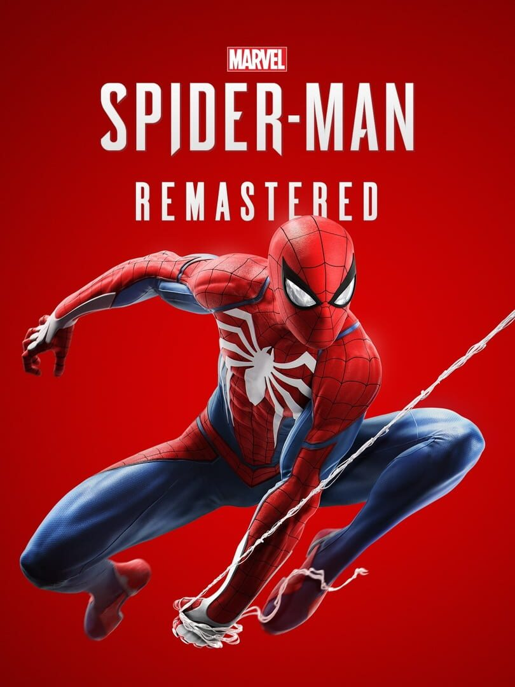

Marvel’s Spider-Man Remastered
Marvel’s Spider-Man Remastered
Detalhes
 |
|
| Tempo de jogo | 1d 18h 36m 0s |
| Última Atividade | 26/12/2025 23:39:08 |
| Adicionado | 07/06/2026 0:35:52 |
| Modificado | 07/06/2026 0:44:35 |
| Status de Conclusão | Jogado |
| Biblioteca | Steam |
| Fonte | Steam |
| Plataforma | PC (Windows) |
| Data de Lançamento | 12/11/2020 |
| Pontuação da Comunidade | 86 |
| Avaliação da crítica | 78 |
| Pontuação do Usuário | |
| Gênero | Adventure Hack and slash/Beat 'em up |
| Desenvolvedor | Insomniac Games |
| Editor | Sony Interactive Entertainment |
| Funções | Single Player |
| Links | Epic Steam Twitch Wikipedia Official Website Community Wiki Playstation |
| Tag | |
Descrição
Desenvolvido pela Insomniac Games em colaboração com a Marvel e otimizado para PC pela Nixxes Software, Marvel's Spider-Man Remasterizado no PC apresenta um Peter Parker experiente que combate as maiores ameaças do crime e vilões icônicos na Nova York da Marvel. Em contrapartida, ele luta para conciliar sua vida pessoal e carreira caóticas enquanto o destino da Nova York da Marvel pesa sobre seus ombros.
Principais características
Seja Mais
Quando vilões icônicos ameaçam a Nova York da Marvel, os mundos de Peter Parker e Spider-Man entram em conflito. Para salvar a cidade e as pessoas que ama, ele precisa se superar.
Sinta-se como o Spider-Man
Após oito anos usando a máscara, Peter Parker é um mestre no combate ao crime. Sinta todo o poder de um Spider-Man experiente, com combates improvisados, acrobacias dinâmicas, travessia urbana fluida e interações com o ambiente.
Mundos em conflito
Os mundos de Peter Parker e Spider-Man entram em conflito em uma história original cheia de ação. Neste novo universo, rostos icônicos da vida de Peter e do Spider-Man foram reinventados, e personagens conhecidos recebem um destaque especial.
A Nova York da Marvel é seu parque de diversões
Nova York ganha vida em Marvel's Spider-Man. Balance por bairros vibrantes e aprecie as vistas deslumbrantes dos monumentos icônicos da Marvel e de Manhattan. Use o ambiente para derrotar vilões com abates épicos dignos de cenas de ação do cinema.
Aproveite o conteúdo completo de A Cidade Que Nunca Dorme
Após os acontecimentos da campanha principal de Marvel's Spider-Man Remasterizado, continue a jornada de Peter Parker em Marvel's Spider-Man: A Cidade Que Nunca Dorme, que inclui três capítulos de história com missões e desafios adicionais para desvendar.
Características da versão para PC
Visual otimizado para PC
Aproveite as várias opções de qualidade gráfica para diversos dispositivos, taxa de quadros desbloqueada e a compatibilidade com tecnologias como NVIDIA DLSS, para aumento de desempenho, e NVIDIA DLAA, para aprimoramento de imagem. Também há suporte para a tecnologia de upscaling AMD FSR 2.0.
Reflexos e sombras com ray tracing*
Veja a cidade ganhar vida de maneira espetacular com as opções de reflexos e sombras com ray tracing e vários modos de qualidade para você selecionar.
Compatível com tela ultra-wide.**
Curta a imersão visual da Nova York da Marvel com diversas configurações de tela, incluindo as proporções de resolução 16:9, 16:10, 21:9, 32:9 e 48:9 por meio do uso de três monitores usando NVIDIA Surround ou AMD Eyefinity.
Controles e personalização
Sinta-se na pele do Spider-Man com a resposta tátil e os efeitos dinâmicos dos gatilhos adaptáveis do controle PlayStation DualSense™ conectado via USB. Aproveite também a compatibilidade com mouse e teclado e as várias opções de personalização de comandos.
*Requer dispositivo de vídeo e PC compatíveis.
**Requer PC compatível.
Principais características
Seja Mais
Quando vilões icônicos ameaçam a Nova York da Marvel, os mundos de Peter Parker e Spider-Man entram em conflito. Para salvar a cidade e as pessoas que ama, ele precisa se superar.
Sinta-se como o Spider-Man
Após oito anos usando a máscara, Peter Parker é um mestre no combate ao crime. Sinta todo o poder de um Spider-Man experiente, com combates improvisados, acrobacias dinâmicas, travessia urbana fluida e interações com o ambiente.
Mundos em conflito
Os mundos de Peter Parker e Spider-Man entram em conflito em uma história original cheia de ação. Neste novo universo, rostos icônicos da vida de Peter e do Spider-Man foram reinventados, e personagens conhecidos recebem um destaque especial.
A Nova York da Marvel é seu parque de diversões
Nova York ganha vida em Marvel's Spider-Man. Balance por bairros vibrantes e aprecie as vistas deslumbrantes dos monumentos icônicos da Marvel e de Manhattan. Use o ambiente para derrotar vilões com abates épicos dignos de cenas de ação do cinema.
Aproveite o conteúdo completo de A Cidade Que Nunca Dorme
Após os acontecimentos da campanha principal de Marvel's Spider-Man Remasterizado, continue a jornada de Peter Parker em Marvel's Spider-Man: A Cidade Que Nunca Dorme, que inclui três capítulos de história com missões e desafios adicionais para desvendar.
Características da versão para PC
Visual otimizado para PC
Aproveite as várias opções de qualidade gráfica para diversos dispositivos, taxa de quadros desbloqueada e a compatibilidade com tecnologias como NVIDIA DLSS, para aumento de desempenho, e NVIDIA DLAA, para aprimoramento de imagem. Também há suporte para a tecnologia de upscaling AMD FSR 2.0.
Reflexos e sombras com ray tracing*
Veja a cidade ganhar vida de maneira espetacular com as opções de reflexos e sombras com ray tracing e vários modos de qualidade para você selecionar.
Compatível com tela ultra-wide.**
Curta a imersão visual da Nova York da Marvel com diversas configurações de tela, incluindo as proporções de resolução 16:9, 16:10, 21:9, 32:9 e 48:9 por meio do uso de três monitores usando NVIDIA Surround ou AMD Eyefinity.
Controles e personalização
Sinta-se na pele do Spider-Man com a resposta tátil e os efeitos dinâmicos dos gatilhos adaptáveis do controle PlayStation DualSense™ conectado via USB. Aproveite também a compatibilidade com mouse e teclado e as várias opções de personalização de comandos.
*Requer dispositivo de vídeo e PC compatíveis.
**Requer PC compatível.